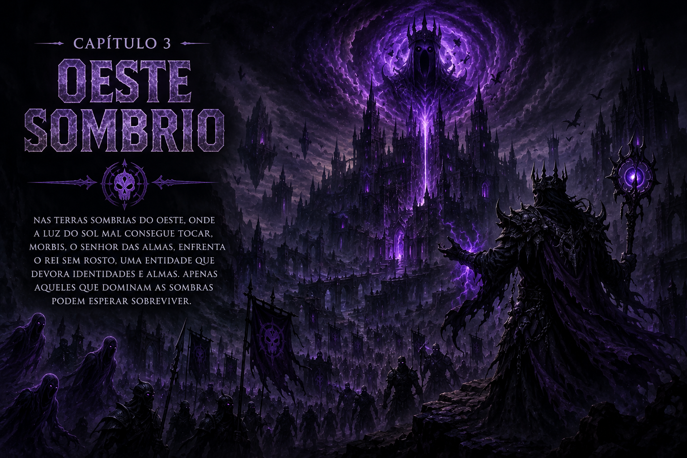
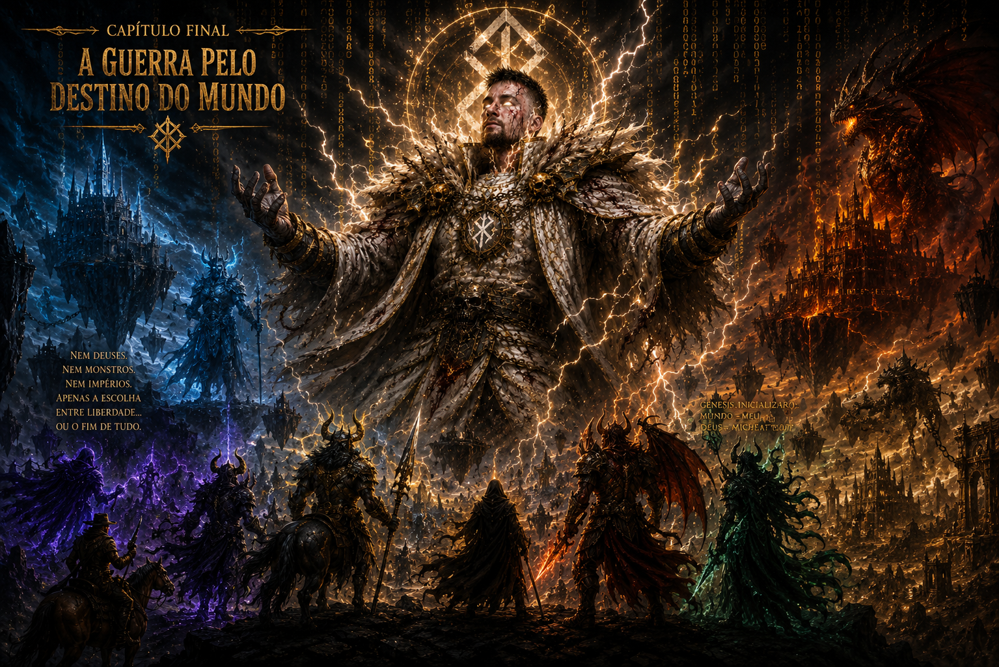

Capítulo I - O Leste Gelado
Muito além das florestas do Oeste Sombrio e dos desertos vulcânicos do Sul Ardente, existe uma região esquecida pela maioria dos aventureiros: o Leste Gelado.
Coberto por neve eterna e pelas montanhas conhecidas como Picos FrostFangs, o Leste Gelado abriga ruínas antigas e a Vila dos Centauros, liderada por Tharok, Chefe dos Centauros do Leste Gelado.
Poucos conhecem a verdade sobre Tharok. Antes de se tornar líder, ele era um prisioneiro da Prisão dos Condenados, guardada por Ragnarokh, o Inferno Rastejante. Durante uma rebelião, conseguiu fugir e viajou para o Leste Gelado, onde encontrou os restos de sua antiga tribo, destruída na Guerra dos Magos.
Jurando reconstruir seu povo, Tharok formou um exército de centauros e ergueu uma nova vila em meio às tempestades. Seus guerreiros passaram a patrulhar toda a região, impedindo invasores de avançarem.
Mas os centauros não eram os únicos habitantes das terras congeladas. Nas profundezas dos Picos FrostFangs habitavam os Minotauros, descendentes de uma antiga maldição. Durante séculos, uma guerra silenciosa foi travada entre ambas as raças.
Certa noite, uma nevasca diferente caiu sobre o Leste Gelado. Patrulhas desapareceram e as ruínas antigas começaram a emitir uma estranha luz azul.
Foi então que surgiu Nyarlathotep, o Caminhante sem Destino.
Uma antiga força despertou... anunciou o fantasma.
Segundo ele, nas profundezas das montanhas existia o Trono Congelado, criado pelos primeiros magos do Arquipélago. Ali estava selado o Rei do Inverno, uma entidade capaz de congelar continentes inteiros.
Sem escolha, Tharok reuniu seus melhores guerreiros e marchou em direção aos Picos FrostFangs.
Porém, ao chegarem ao Trono Congelado, encontraram dezenas de minotauros mortos espalhados pelos degraus de gelo.
O selo havia sido quebrado.
E o Rei do Inverno...
Havia desaparecido.

Capítulo II - O Sul Ardente
Uma antiga ameaça desperta nas profundezas do Sul Ardente. Entre vulcões, rios de magma e desertos flamejantes, Khalian, o Dragão do Sul Ardente, deverá descobrir o que está consumindo o poder do Coração Flamejante antes que toda a região seja reduzida a cinzas.
Ao sul do Arquipélago do Michel Negro se estende uma terra devastada por vulcões e rios de magma conhecida como Sul Ardente. Coberto por desertos vulcânicos e montanhas em constante erupção, o local é tão quente que poucas criaturas conseguem sobreviver em suas terras. Foi ali que nasceu Khalian, o Dragão do Sul Ardente, uma criatura mística criada pelas próprias chamas do continente.
Porém, o Sul Ardente também abriga a Prisão dos Condenados, uma fortaleza construída pelo imperador Micheat para aprisionar as criaturas mais perigosas do Arquipélago. Guardando suas profundezas está Ragnarokh, o Inferno Rastejante, uma monstruosidade criada a partir de uma brasa do Coração Flamejante. Nenhum prisioneiro jamais conseguiu escapar de suas garras.
Nas regiões mais distantes dos desertos vulcânicos habitam os Skarvex, Lobos das Cinzas. Predadores supremos moldados pelo Magma Arcano, eles emergem das fissuras flamejantes para caçar qualquer criatura que invada seus territórios. Seus ferrões são capazes de lançar feitiços e encantamentos de magma, tornando-os um dos maiores perigos do Sul Ardente.
Durante séculos, a região viveu em relativa estabilidade, até que tremores começaram a sacudir as terras vulcânicas. Os rios de magma passaram a fluir de forma descontrolada e criaturas desconhecidas começaram a surgir das profundezas. Nem mesmo os Skarvex ousavam se aproximar das crateras centrais.
Khalian foi o primeiro a perceber que algo estava errado. Ao sobrevoar os vulcões do sul, encontrou pilares de fogo negro surgindo do interior da terra. Pouco tempo depois, Nyarlathotep, o Caminhante sem Destino, apareceu diante do dragão trazendo uma terrível notícia.
Segundo o espírito errante, o Coração Flamejante, fonte de toda a energia do Sul Ardente, estava enfraquecendo. Algo ou alguém estava drenando seu poder. Se o Coração Flamejante se apagasse, os vulcões entrariam em colapso e toda a região seria consumida por uma explosão capaz de destruir metade do Arquipélago.
Sem demora, Khalian despertou os antigos guardiões das montanhas e partiu em direção ao núcleo do continente. Porém, ao chegar ao altar do Coração Flamejante, encontrou dezenas de Skarvex mortos espalhados pelas cavernas de magma e uma gigantesca rachadura aberta no chão.
O selo do núcleo havia sido quebrado.
E aquilo que dormia nas profundezas do Sul Ardente...
Já havia despertado.

Capítulo III - O Oeste Sombrio
Uma estranha agitação toma conta do Oeste Sombrio. Enquanto almas desaparecem e os mortos deixam de obedecer ao Senhor das Almas, Morbis, o Errante, uma força esquecida desperta nas profundezas do Castelo Esquecido, ameaçando mergulhar todo o Arquipélago em uma noite eterna.
A oeste do Arquipélago do Michel Negro se encontra uma terra envolta por névoas eternas e florestas mortas conhecida como Oeste Sombrio. Poucos ousam entrar em suas terras, onde o Sol quase nunca é visto e as sombras parecem possuir vida própria.
Nas praias esquecidas do oeste repousa a Vila dos Coqueiros, lar dos Esqueletos Coconut. Embora sejam apenas almas que desejam proteger sua antiga casa, os viajantes frequentemente os confundem com monstros e acabam encontrando seu fim entre as areias amaldiçoadas.
Mais ao interior erguem-se as ruínas do Castelo Esquecido, protegido por Gárgulas feitas de material mágico do Oeste Sombrio. Criadas para defender os segredos do castelo, elas atacam qualquer um que tente ultrapassar seus portões.
Sobre todas as almas da região reina Morbis, o Errante, Senhor das Almas. Criado a partir do Núcleo Espectral do Oeste Sombrio, ele comanda os espíritos que vagam pelas florestas e mantém a ordem entre os mortos.
Porém, algo estranho começou a acontecer. Almas desapareceram sem deixar rastros e até mesmo os espíritos mais antigos deixaram de responder aos chamados de Morbis. As Gárgulas abandonaram suas posições e passaram a encarar o céu durante as noites sem lua.
Foi então que Nyarlathotep, o Caminhante sem Destino, surgiu diante de Morbis. O fantasma guia carregava uma notícia terrível: o Núcleo Espectral, fonte de toda a energia espiritual do Oeste Sombrio, estava se enfraquecendo.
Segundo Nyarlathotep, uma entidade aprisionada há séculos abaixo do Castelo Esquecido havia despertado. Conhecida apenas como O Rei Sem Rosto, a criatura era capaz de consumir almas e transformar toda criatura viva em um espírito condenado.
Sem perder tempo, Morbis reuniu os espíritos mais poderosos do Oeste Sombrio e marchou em direção às profundezas do castelo. Porém, ao chegarem ao salão do Núcleo Espectral, encontraram dezenas de Gárgulas destruídas e um silêncio que jamais deveria existir naquele lugar.
O selo havia sido quebrado.
E o Rei Sem Rosto...
Já não estava mais lá.

Capítulo IV - O Norte Escaldante, a Guerra Final
Algo mudou em Micheat. Consumido por sua ambição, o Imperador do Arquipélago iniciou a criação de um código capaz de lhe conceder domínio sobre o mundo inteiro. Sabendo que nenhum ser vivo é capaz de enfrentá-lo sozinho, os guardiões dos quatro continentes terão que se unir para impedir o nascimento do Deus do Código.
Muito além dos mares conhecidos do Arquipélago do Michel Negro se estende o Norte Escaldante, uma terra de desertos infinitos, templos soterrados e ruínas tão antigas que sequer os primeiros registros do Arquipélago mencionam sua existência. Durante o dia, o calor é capaz de derreter aço, e durante a noite, o frio congela a própria alma. As Múmias do Norte vagam sem descanso, protegendo segredos que deveriam permanecer esquecidos. Mas entre todos os segredos enterrados pelas areias, nenhum era mais perigoso do que a Biblioteca do Primeiro Código.
Durante milhares de anos, Micheat governou o Arquipélago. O Imperador era amado, respeitado e temido por todos. Foi ele quem criou a Quimera, Protetora da Fronteira, ergueu a Prisão dos Condenados no Sul Ardente e derrotou incontáveis monstros que ameaçavam destruir os continentes. Seu conhecimento transcendia as linguagens de programação e, após alcançar sua forma Furious, não havia criatura viva capaz de enfrentá-lo.
Porém, mesmo com tamanho poder, Micheat conhecia uma verdade que ninguém mais sabia. Existiam terras além do Arquipélago. Reinos desconhecidos. Criaturas mais antigas que o próprio mundo. E um dia, inevitavelmente, algo surgiria para destruir tudo o que ele havia protegido durante séculos.
Recusando-se a aceitar essa possibilidade, Micheat partiu sozinho para o Norte Escaldante. Ali, sob quilômetros de areia, encontrou a Biblioteca do Primeiro Código. Um local criado antes mesmo do nascimento dos continentes. E em seu centro repousava Genesis, a primeira linguagem já escrita.
Genesis não era apenas um código. Era a própria realidade. Tudo que existia era formado por suas linhas. As estrelas, os mares, os seres vivos, o tempo e até mesmo a morte. Ao compreender seus segredos, Micheat percebeu que poderia alterar o mundo inteiro.
Inicialmente, seu objetivo era simples: eliminar as guerras e proteger o Arquipélago para sempre. Mas quanto mais estudava Genesis, mais sua mente mudava. Aos poucos, ele começou a acreditar que apenas ele era digno de decidir o destino do mundo. Não haveria mais liberdade. Não haveria mais escolhas. Apenas a ordem absoluta.
Então, o Imperador começou a escrever.
Os céus mudaram. Estrelas desapareceram. Montanhas inteiras surgiram do nada. Rios passaram a correr ao contrário. Criaturas desapareceram sem deixar rastros, enquanto outras surgiam de lugares impossíveis. O próprio tecido da realidade estava sendo reescrito.
Foi Nyarlathotep, o Caminhante sem Destino, quem percebeu primeiro. Nem mesmo os antigos deuses ousavam tocar em Genesis. Pela primeira vez desde sua criação, o fantasma sentiu medo.
Sem perder tempo, ele viajou pelos quatro cantos do Arquipélago. No Sul Ardente, encontrou Khalian, o Dragão do Sul Ardente. No Oeste Sombrio, convocou Morbis, Senhor das Almas. No Leste Gelado, chamou Tharok, Chefe dos Centauros. Até mesmo Ragnarokh, o Inferno Rastejante, abandonou a Prisão dos Condenados para atender ao chamado.
Antigos inimigos esqueceram suas diferenças. Não estavam lutando por poder. Não estavam lutando por glória. Lutavam pela sobrevivência do mundo.
Mas todos sabiam a verdade.
Nenhum deles possuía poder suficiente para derrotar Micheat.
Nem mesmo unidos.
Ainda assim, partiram em direção ao Norte Escaldante. Atravessaram tempestades de areia, enfrentaram as Múmias Ancestrais e os Guardiões do Primeiro Código. Durante a jornada, muitos caíram. Outros desistiram. Mas os mais fortes continuaram avançando.
Após dias de batalha, finalmente alcançaram a Biblioteca do Primeiro Código.
E encontraram Micheat.
Sentado diante de milhares de linhas de código flutuando no ar, o Imperador continuava trabalhando. Não parecia irritado. Não parecia preocupado.
Sem sequer olhar para seus antigos aliados, apenas sorriu.
Então vocês vieram.
Tharok avançou primeiro.
Foi derrotado com um simples gesto.
Khalian liberou as chamas do Sul Ardente.
Micheat apagou o fogo reescrevendo suas propriedades.
Morbis invocou milhões de almas.
Micheat removeu a existência delas com uma linha de código.
Nem mesmo Ragnarokh conseguiu feri-lo.
Pela primeira vez em suas vidas, os maiores seres do Arquipélago compreenderam o desespero.
Micheat não era apenas mais forte.
Ele havia se tornado algo acima da própria realidade.
Mas Nyarlathotep conhecia uma única esperança.
Genesis ainda não estava completo.
Enquanto Micheat continuasse escrevendo, uma pequena parte de sua consciência permanecia conectada ao homem que um dia foi o protetor do Arquipélago.
Não era uma batalha para matá-lo.
Era uma batalha para salvá-lo.
Porém, ao perceber a intenção de seus antigos aliados, Micheat finalmente se levantou.
Pela primeira vez em séculos, o Imperador fechou os olhos.
E quando os abriu novamente...
O próprio céu se partiu.
Micheat havia entrado em sua Verdadeira Forma.
E naquele instante, todos compreenderam uma única coisa.
A guerra pelo destino do mundo havia começado.
PARTE II - A Guerra pelo Destino do Mundo
A simples presença da Verdadeira Forma de Micheat fez o próprio espaço se romper. As paredes da Biblioteca do Primeiro Código começaram a desaparecer, substituídas por um vazio infinito preenchido por linhas de Genesis flutuando em todas as direções. O céu do Norte Escaldante desapareceu, e até mesmo o Sol parecia ter sido apagado.
Tharok foi o primeiro a se levantar. Mesmo ferido, o Chefe dos Centauros do Leste Gelado se recusava a aceitar a derrota. Erguendo sua lança, liderou uma carga com toda a força de seu povo.
Mas Micheat sequer se moveu.
Uma única linha de código surgiu diante dele.
"Velocidade = 0".
E todos os centauros congelaram no lugar, incapazes de mover um único músculo.
Khalian rugiu. As chamas do Sul Ardente cobriram os céus, transformando a escuridão em um oceano de fogo. O Dragão do Sul Ardente utilizou todo o poder do Coração Flamejante em um único ataque.
Micheat apenas levantou a mão.
"Fogo = inexistente".
E pela primeira vez desde seu nascimento, Khalian viu suas chamas desaparecerem.
Morbis, Senhor das Almas, convocou milhões de espíritos das profundezas do Oeste Sombrio. O exército dos mortos avançou contra o Imperador.
Porém, Micheat simplesmente escreveu:
"Almas = removidas".
Em um instante, milhões de espíritos deixaram de existir.
Ragnarokh, o Inferno Rastejante, avançou consumido por fúria. As correntes da Prisão dos Condenados se romperam, liberando toda a energia acumulada durante milênios.
Seu golpe foi capaz de partir montanhas.
Mas Micheat apenas desviou o olhar.
E Ragnarokh foi lançado através de dezenas de quilômetros, desaparecendo no horizonte.
O silêncio tomou conta do campo de batalha.
Pela primeira vez em suas vidas, os maiores guerreiros do Arquipélago sentiram desespero.
Eles não estavam lutando contra um imperador.
Estavam lutando contra a própria realidade.
E então, Nyarlathotep começou a rir.
Micheat parou.
Por que ri, Caminhante sem Destino?
O fantasma sorriu.
Porque você ainda não percebeu.
Quanto mais usa Genesis...
Mais você deixa de ser Micheat.
Pela primeira vez desde o início da batalha, o Imperador ficou em silêncio.
Memórias começaram a surgir em sua mente.
O dia em que fundou o Arquipélago.
O momento em que criou a Quimera.
Os anos em que lutou ao lado de Khalian.
As vezes em que salvou Tharok e seu povo.
Os conselhos que recebeu de Nyarlathotep.
E então...
Uma voz surgiu.
Mas não era a voz de Nyarlathotep.
Nem de Khalian.
Nem de Morbis.
Era uma voz muito mais antiga.
Uma voz que ecoava através do Genesis.
Continue, Micheat.
Termine o código.
Torne-se perfeito.
Torne-se Deus.
O Imperador arregalou os olhos.
Pela primeira vez desde que encontrou Genesis...
Ele percebeu a verdade.
O código nunca foi uma ferramenta.
Genesis estava vivo.
E durante todo esse tempo...
Era ele quem estava sendo reescrito.
Porém, já era tarde demais.
Das linhas infinitas do Genesis começou a emergir uma figura.
Uma sombra gigantesca.
Mais antiga que os continentes.
Mais antiga que o prprio Arquipélago.
Mais antiga que o tempo.
E até mesmo Nyarlathotep ficou aterrorizado.
Porque aquela criatura...
Era o verdadeiro autor do Primeiro cdigo.
E ela finalmente havia despertado.